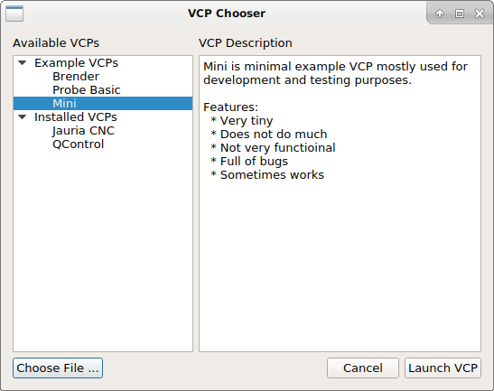

Basic Usage¶
At this point you should have the dependencies satisfied and QtPyVCP installed.
Launching a sim config¶
Several sim configurations are included with QtPyVCP, they should have been copied to your ~/linuxcnc directory when you installed QtPyVCP. If not run $ cp -r linuxcnc $HOME from the qtpyvcp directory to install them.
Included sim configs:
sim.qtpyvcp
├── hal-widgets.ini
├── xyz.ini
├── xyz3s.ini
├── xyz-metric.ini
├── xyzab.ini
├── xyzb.ini
├── xyzcw.ini
└── xyzy-gantry.ini
To launch the basic XYZ sim machine run:
linuxcnc ~/linuxcnc/configs/sim.qtpyvcp/xyz.ini
This should start LinuxCNC and show the VCP chooser with a list of available VCPs.

VCP Chooser dialog window
Note: If there are no VCPs listed, most likely you did not run setup.py per the installation instructions.
To skip the VCP chooser and launch a VCP directly you can specify the name of
the desired VCP on the command line. For example to launch the Mini VCP:
linuxcnc ~/linuxcnc/configs/sim.qtpyvcp/xyz.ini mini
INI Configuration¶
QtPyVCP does not require any special INI settings. To set qtpyvcp as the GUI simply edit the INI DISPLAY entry to read:
[DISPLAY]
DISPLAY = qtpyvcp
...
This will show the VCP chooser every time you start LinuxCNC, but as we saw above it is possible to specify a specific VCP on the command line. We can do the same in the INI:
[DISPLAY]
DISPLAY = qtpyvcp mini
...
But since QtPyVCP supports a bunch of command line options, this can get messy. We can take advantage of the fact that when QtPyVCP starts up it scans the INI [DISPLAY] section for any items that match the names of the command line options, and merges them with any options specified on the command line.
So a better INI config would look like this:
[DISPLAY]
DISPLAY = qtpyvcp
VCP = mini
...
In general the command line options take precedence, meaning they will override
options set in the INI. The exception to this are any flags, such as the
--fullscreen option, which if specified in the INI can not be overridden on
the command line.